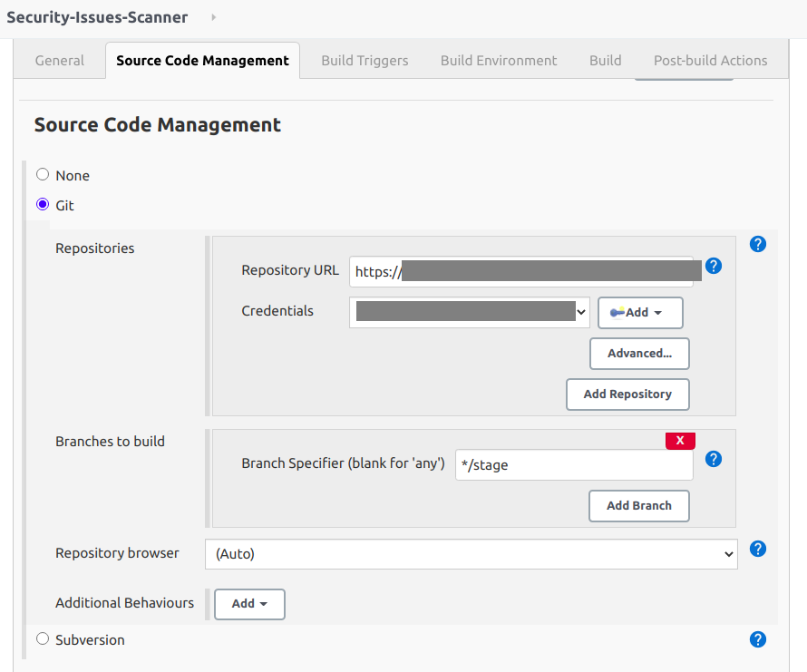
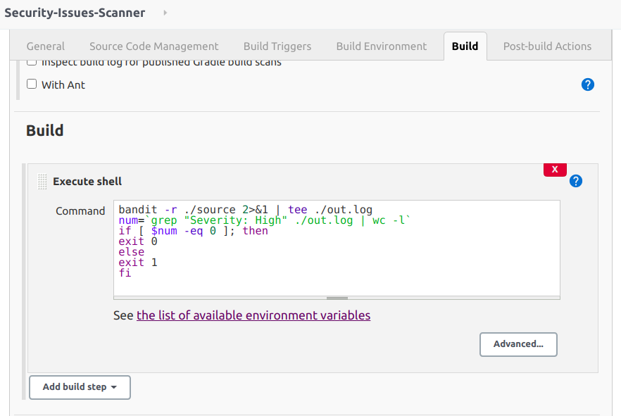
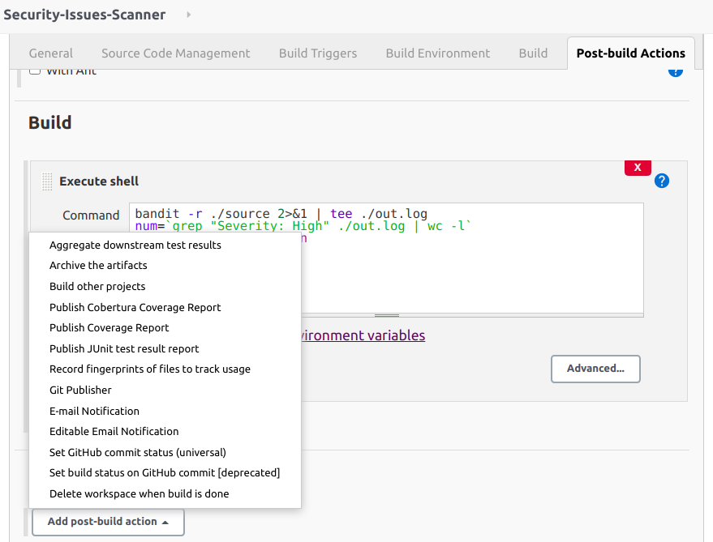

Find Security Issues With Bandit
Abstract
In this post, we introduce a method of automating the process of code review of Python codes by using:
-
Bandit: To perform code review & find security issues of Python codes. -
Jenkins: Run this test automatically based on changes of code on target branch.
Steps
Prepare environment
Before we start, make sure the system satisfy below mentioned requirements:
- Python2.7/Python3 installed
- Git & pip configured
- Jenkins servers installed & configured
- Identify git branch for code scanning
- Install
bandittool (See guide from https://github.com/PyCQA/bandit)
Create Jenkins job
From home page of Jenkins:
- Click "New Item"
- Enter a name of the new job, for example: "Security-Issues-Scanner"
- Choose "Freestyle project" then click "OK" to go to next steps

Configure Jenkins job
After clicking "OK" button in the previous step, we will see a GUI that contains steps to configure Jenkins job. We will go over step by step.
- In "General" step, we should add a description for this Jenkins job and configure log rotation to prevent too many logs.

- In "Source Code Management" step, you have to do following actions:
- Enter your repository (From GitHub, GitLab, Bitbucket, Backlog, .etc)
- Add credentials that can pull codes from a remote branch and select it.
- Provide a branch that you want to check (In this example, I want to scan stage branch).

There are many other additional behaviors that you can add more. For example, your project has submodules and need to scan them as well, you can add "Advanced sub-modules behaviors" and do configure. Here is list most behaviors that you can add:

- In "Build Triggers" step, there are many options that you can run this job but I will choose "Poll SCM". This will allow me to configure to run this job like a crontab in Linux system. For example, I will run this job once an hour (Using Poll SCM then the job will run if there is a new change of code only).

- In "Build Environment" step, you can choose some options for building like "Delete workspace before build starts", Add timestamps to the Console Output", .etc. It's up to you. My suggestion is that you should add "Add timestamps to the Console Output" then you can know the build time when checking the output log again.
- "Build" step: Because I installed bandit on Jenkins server, so I will choose "Execute shell" for this step. I will use bandit to scan all source folder from git repository and try to find if there is any "High Severity" item. If there is any item, I will use "exit 1" to mark that this build is failed. Otherwise, the build is success. Then we can use "Post-build Actions" to define response actions with each type of status.
Here is content of script that I will run:
bandit -r ./source 2>&1 | tee ./out.log
num=`grep "Severity: High" ./out.log | wc -l`
if [ $num -eq 0 ]; then
exit 0
else
exit 1
fi

- "Post-build Actions" will support us to define actions that we want to do when the build is failed. There are many actions that we can choose:

With my opinion, I mostly use "E-mail Notification" then I will know when this job is failed to check and make it works as it should be. All's done! Now you can click "Save" and then click "Build Now" to build this job. If it's failed, you can go to the failed build and check "Console Output" to find out the reason and fix this. Otherwise, you can sleep well because there is no high severity issues on your code.
Here is an example of an output that you can see on "Console Output" on a build item (You can see it when the job is running, it will be loaded in real-time).

Thanks for your reading to the end of this post! I also want to thank "Digital Varys" with meaningful preview image!